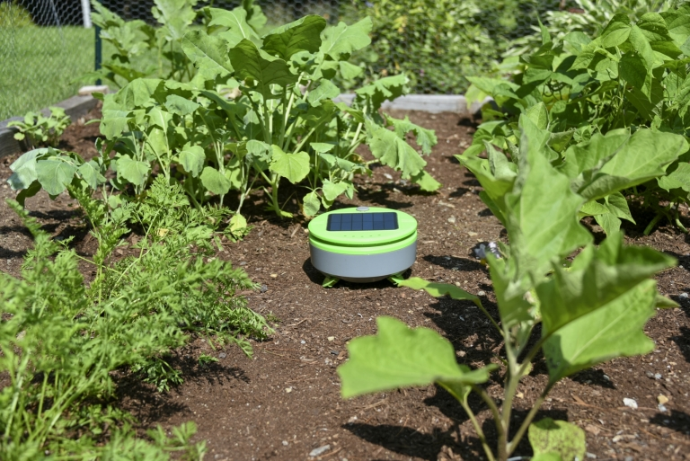
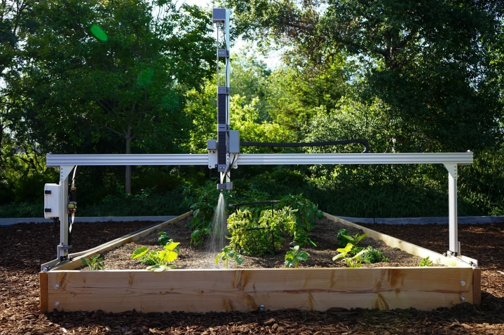

Aldana, A. (2017, February 5). Photo by Arnaldo Aldana on
unsplash. Beautiful Free
Images & Pictures. Retrieved June 6, 2022,
from https://unsplash.com/photos/HfH5yd70ox8
Aldana, A. (2017, February 5). Photo by Arnaldo Aldana on
unsplash. Beautiful Free
Images & Pictures. Retrieved June 6, 2022,
from https://unsplash.com/photos/HfH5yd70ox8
Gardening Technology
Taking care of your garden is sometimes a chore. With ongoing advances in technology, gardening has numerous products that can help you with your garden. The tertill is solar powered robot designed to find and cut weeds in your garden. The tertill can keep gardens free of weed up to 200 square feet. After roaming around and clearing weeds, it switches to a charging mode until it has recharged the battery. With built in parameters to prevent it from going outside its working area and sensors that prevent it from driving over or cutting your plants.
 Tertill Weeding Robot Review. PCMAG. (n.d.). Retrieved June 7, 2022, from https://www.pcmag.com/reviews/tertill-weeding-robotAnother technological help for gardening is the farmbot. This does great at getting rid of weeds, but can plant seeds and water your plants automaticly for you as well. For people who want to have a garden and have busy schedules or leave for extended times such as vacations, this can keep your garden maintained for you. The farmbot also monitors the soil and comes with an app that you can use to control the robotic arm and atatched tools with.
 Velasco, J. (2019, July 11). Like roombas for your garden, these robots automate home farming. Digital Trends. Retrieved June 7, 2022, from https://www.digitaltrends.com/home/farmbot-diy-agriculture-gardening-robot/